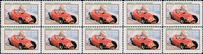

Unknown
 |
Issue date: 2005 A souvenir sheet featuring the following drivers: - Rubens Barrichello - Fernando Alonso - Jean Alesi - Mario Andretti - Jacques Villeneuve - Elio de Angelis - Kimi Raikkonen - Alain Prost - Juan Pablo Montoya Issue date: 2006 A mini souvenir sheet featuring Ayrton Senna. Senna's helmet design had few changes during his career - the yellow background with the green stripe that surrounded the upper visor and the light metalic blue stripe surrounding the lower visor was Senna's trademark design.  Issue date: 2004 A mini souvenir sheet featuring Fernando Alonso and Renault. Alonso drove for Renault from 2003 to 2006; in 2006 Alonso became the youngest double world champion (having previously been the youngest world champion in 2005). Issue date: 2006 A mini souvenir sheet featuring Ayrton Senna and Alain Prost. Issue date: 2006 A mini souvenir sheet fearuring the Monaco Grand Prix. The race will be remembered most for Michael Schumacher's actions during the closing stages of qualifying - he stopped his car in the Rascasse corner and prevented his rival Fernando Alonso improving his time and thus potentially taking pole from Schumacher. Alonso (Renault) went on to win the race anyway, with Juan Pablo Montoya (McLaren) second and David Coulthard (Red Bull) third. Issue date: 2006 A mini souvenir sheet fearuring the Monaco Grand Prix. The race will be remembered most for Michael Schumacher's actions during the closing stages of qualifying - he stopped his car in the Rascasse corner and prevented his rival Fernando Alonso improving his time and thus potentially taking pole from Schumacher. Alonso (Renault) went on to win the race anyway, with Juan Pablo Montoya (McLaren) second and David Coulthard (Red Bull) third. Issue date: 2005 A mini souvenir sheet featuring Ayrton Senna. Includes the podium at the Monaco Grand Prix - Senna won this Grand Prix five times in a row (1989 to 1993).  Issue date: 2006 A mini souvenir sheet featuring Ayrton Senna driving some of his cars. Senna drove for Toleman, Lotus, McLaren and Williams  Issue date: 2006 A souvenir sheet featuring Alain Prost. Prost drove for McLaren, Renault, Ferrari and Williams, from 1980 to 1993. Issue date: 10th November 2005 A series of souvenir covers featuring various F1 world champions: - Giuseppe Farina - Alberto Ascari - Jackie Stewart - Emerson Fittipaldi - Mike Hawthorn - Jim Clark - Jochen Rindt - Graham Hill - Phil Hill - Juan Manuel Fangio - John Surtees  Issue date: 10th November 2005 A series of souvenir covers featuring various F1 world champions: - Giuseppe Farina - Alberto Ascari - Jackie Stewart - Emerson Fittipaldi - Mike Hawthorn - Jim Clark - Jochen Rindt - Graham Hill - Phil Hill - Juan Manuel Fangio - John Surtees  Issue date: 10th November 2005 A series of souvenir covers featuring various F1 world champions: - Giuseppe Farina - Alberto Ascari - Jackie Stewart - Emerson Fittipaldi - Mike Hawthorn - Jim Clark - Jochen Rindt - Graham Hill - Phil Hill - Juan Manuel Fangio - John Surtees  Issue date: 10th November 2005 A series of souvenir covers featuring various F1 world champions: - Giuseppe Farina - Alberto Ascari - Jackie Stewart - Emerson Fittipaldi - Mike Hawthorn - Jim Clark - Jochen Rindt - Graham Hill - Phil Hill - Juan Manuel Fangio - John Surtees  Issue date: 10th November 2005 A series of souvenir covers featuring various F1 world champions: - Giuseppe Farina - Alberto Ascari - Jackie Stewart - Emerson Fittipaldi - Mike Hawthorn - Jim Clark - Jochen Rindt - Graham Hill - Phil Hill - Juan Manuel Fangio - John Surtees Issue date: 10th November 2005 A series of souvenir covers featuring various F1 world champions: - Giuseppe Farina - Alberto Ascari - Jackie Stewart - Emerson Fittipaldi - Mike Hawthorn - Jim Clark - Jochen Rindt - Graham Hill - Phil Hill - Juan Manuel Fangio - John Surtees  Issue date: 10th November 2005 A series of souvenir covers featuring various F1 world champions: - Giuseppe Farina - Alberto Ascari - Jackie Stewart - Emerson Fittipaldi - Mike Hawthorn - Jim Clark - Jochen Rindt - Graham Hill - Phil Hill - Juan Manuel Fangio - John Surtees Issue date: 10th November 2005 A series of souvenir covers featuring various F1 world champions: - Giuseppe Farina - Alberto Ascari - Jackie Stewart - Emerson Fittipaldi - Mike Hawthorn - Jim Clark - Jochen Rindt - Graham Hill - Phil Hill - Juan Manuel Fangio - John Surtees  Issue date: 10th November 2005 A series of souvenir covers featuring various F1 world champions: - Giuseppe Farina - Alberto Ascari - Jackie Stewart - Emerson Fittipaldi - Mike Hawthorn - Jim Clark - Jochen Rindt - Graham Hill - Phil Hill - Juan Manuel Fangio - John Surtees Issue date: 10th November 2005 A series of souvenir covers featuring various F1 world champions: - Giuseppe Farina - Alberto Ascari - Jackie Stewart - Emerson Fittipaldi - Mike Hawthorn - Jim Clark - Jochen Rindt - Graham Hill - Phil Hill - Juan Manuel Fangio - John Surtees  Issue date: 10th November 2005 A series of souvenir covers featuring various F1 world champions: - Giuseppe Farina - Alberto Ascari - Jackie Stewart - Emerson Fittipaldi - Mike Hawthorn - Jim Clark - Jochen Rindt - Graham Hill - Phil Hill - Juan Manuel Fangio - John Surtees  Issue date: Unknown A series of local post labels in strips of 10 featuring various F1 'legends' and champions. Issue date: Unknown A series of local post labels in strips of 10 featuring various F1 'legends' and champions. Issue date: Unknown A series of local post labels in strips of 10 featuring various F1 'legends' and champions.  Issue date: Unknown A series of local post labels in strips of 10 featuring various F1 'legends' and champions.  Issue date: Unknown A series of local post labels in strips of 10 featuring various F1 'legends' and champions.  Issue date: Unknown A series of local post labels in strips of 10 featuring various F1 'legends' and champions. Issue date: Unknown A series of local post labels in strips of 10 featuring various F1 'legends' and champions.  Issue date: Unknown A series of local post labels in strips of 10 featuring various F1 'legends' and champions.  Issue date: Unknown A series of local post labels in strips of 10 featuring various F1 'legends' and champions.  Issue date: Unknown A series of local post labels in strips of 10 featuring various F1 'legends' and champions. Issue date: Unknown A series of local post labels in strips of 10 featuring various F1 'legends' and champions.  Issue date: Unknown A series of local post labels in strips of 10 featuring various F1 'legends' and champions.  Issue date: Unknown A series of local post labels in strips of 10 featuring various F1 'legends' and champions.  Issue date: Unknown A series of local post labels in strips of 10 featuring various F1 'legends' and champions.  Issue date: Unknown A series of local post labels in strips of 10 featuring various F1 "legends" and champions. Luigi Musso competed in F1 from 1953 to 1958, he drove for Maserati and Ferrari. He won only one Grand Prix, the 1956 Argentine Grand Prix. Musso was fatally injured in an accident during the 1958 French Grand Prix at Reims. Issue date: Unknown A series of local post labels in strips of 10 featuring various F1 "legends" and champions. Olivier Gendebien competed in F1 from 1955 to 1961, he mostly drove Ferrari cars - but his best result came in 1960 when he drove the Cooper T51 to 6th place in the drivers' championship.  Issue date: Unknown A series of local post labels in strips of 10 featuring various F1 "legends" and champions. Peter Collins competed in F1 from 1952 to 1958 - he drove for HW Motors (HWM 52 and 53), G A Vandervell (Vanwall Special), Maserati (250F) and Ferrari (555, D50, 801, Dino 246). In 1956 he came third in the drivers' championship. Collins was killed as a result of injuries sustained in an accident at the 1958 German Grand Prix at the Nurburgring. Whilst with Ferrari, Collins became close friends with team mate Mike Hawthorn, to the point that they agreed to split their winnings and engaged an intense rivalry with fellow Ferrari driver Luigi Musso.  Issue date: Unknown A series of local post labels in strips of 10 featuring various F1 'legends' and champions.  Issue date: Unknown A series of local post labels in strips of 10 featuring various F1 'legends' and champions. Issue date: Unknown A series of local post labels in strips of 10 featuring various F1 'legends' and champions.  Issue date: Unknown A series of local post labels in strips of 10 featuring various F1 'legends' and champions.  Issue date: Unknown A series of local post labels in strips of 10 featuring various F1 'legends' and champions.  Issue date: Unknown A series of local post labels in strips of 10 featuring various F1 'legends' and champions.  Issue date: Unknown A series of local post labels in strips of 10 featuring various F1 'legends' and champions.  Issue date: Unknown A series of local post labels in strips of 10 featuring various F1 'legends' and champions.  Issue date: Unknown A series of local post labels in strips of 10 featuring various F1 'legends' and champions.  Issue date: Unknown A series of local post labels in strips of 10 featuring various F1 'legends' and champions.  Issue date: Unknown A series of local post labels in strips of 10 featuring various F1 'legends' and champions.  Issue date: Unknown A series of local post labels in strips of 10 featuring various F1 'legends' and champions.  Issue date: Unknown A series of local post labels in strips of 10 featuring various F1 'legends' and champions.  Issue date: Unknown A series of local post labels in strips of 10 featuring various F1 "legends" and champions. Surtees drove in F1 from 1960 to 1972 and won the drivers title in 1964 with Ferrari. Issue date: Unknown A series of labels produced by Lavells Newsagents featuring a variety of great racing cars, including some Formula 1 cars: - Maserati 250F - Lotus - McLaren M7A - Brabham - BRM  Issue date: Unknown A series of labels produced by Lavells Newsagents featuring a variety of great racing cars, including some Formula 1 cars: - Maserati 250F - Lotus - McLaren M7A - Brabham - BRM  Issue date: Unknown A series of labels produced by Lavells Newsagents featuring a variety of great racing cars, including some Formula 1 cars: - Maserati 250F - Lotus - McLaren M7A - Brabham - BRM Issue date: Unknown A series of labels produced by Lavells Newsagents featuring a variety of great racing cars, including some Formula 1 cars: - Maserati 250F - Lotus - McLaren M7A - Brabham - BRM  Issue date: Unknown A series of labels produced by Lavells Newsagents featuring a variety of great racing cars, including some Formula 1 cars: - Maserati 250F - Lotus - McLaren M7A - Brabham - BRM Issue date: Unknown Mike Hailwood was a British Grand Prix motorcycle road racer regarded by many as one of the greatest racers of all time. He became one of the few men to compete at Grand Prix level in both motorcycle and car racing. In F1, Hailwood drove for Reg Parnell Racing in 1963, 1964 and 1965 without much success. In 1971, 1972 and 1973 he drove for Team Surtees, again more often than not retiring from races. However, in 1972 he achieved his best result in F1 coming second at the Italian Grand Prix. In his final season of F1, 1974, he drove for McLaren, and finished 11th in the Drivers' Championship. He left Formula One after being injured badly at the 1974 German Grand Prix at the Nurburgring, so did complete the season with McLaren. Hailwood was recognised for his bravery when in the 1973 South African Grand Prix he went to pull Clay Regazzoni from his burning car after the two collided on the second lap of the race. Hailwood's driving suit caught fire, but after being extinguished by a fire marshall he returned to help rescue Regazzoni, an act for which he was awarded the George Medal, the 2nd highest gallantry award that a British civilian can be awarded.  Issue date: Unknown A single stamp featuring the Formula 2 Grand Prix of Barcelona in 1970.  Issue date: Unknown A single stamp featuring the Formula 2 Grand Prix of Barcelona in 1968.  Issue date: Unknown Nigel Mansell will forever be associated with "Red 5" - teams in motor racing series are generally allocated numbers - when Mansell joined Williams in 1985 he was allocated number 5. For the first four races of the 1985 season, both Williams cars had white numbers, but from a distance the numerals "5" and "6" resembled each other. As a consequence, it was decided to give Mansell's car a red number to make it more distinctive. While this was initially just for recognition, BBC F1 commentator Murray Walker began describing Mansell's car as "Red Five", leading to Mansell retaining the red coloured number throughout his first spell at Williams. On his return to the team in 1991, Williams had retained the number 5 car, allowing Mansell to race as "Red Five" once again. Issue date: Unknown A mini sheet featuring the: - Toro Rosso STR7 - Sauber C31 Issue date: Unknown A mini sheet featuring the: - Force India VJM05 - Lotus E20 Issue date: Unknown A mini sheet featuring the: - Caterham CT01 - Williams FW14 Issue date: Unknown A mini sheet featuring the: - McLaren MP4/27 - Red Bull RB8  Issue date: Unknown A mini sheet featuring the: - Marussia MR01 - HRT F112 Issue date: Unknown A mini sheet fearuring the: - Mercedes F1 W03 - Ferrari F2012 |